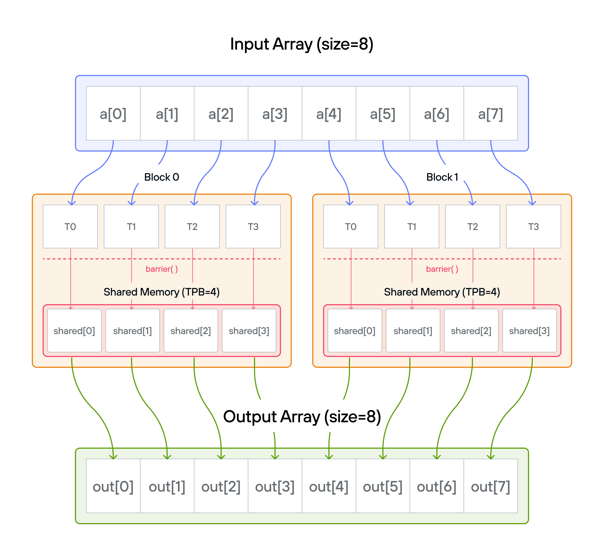
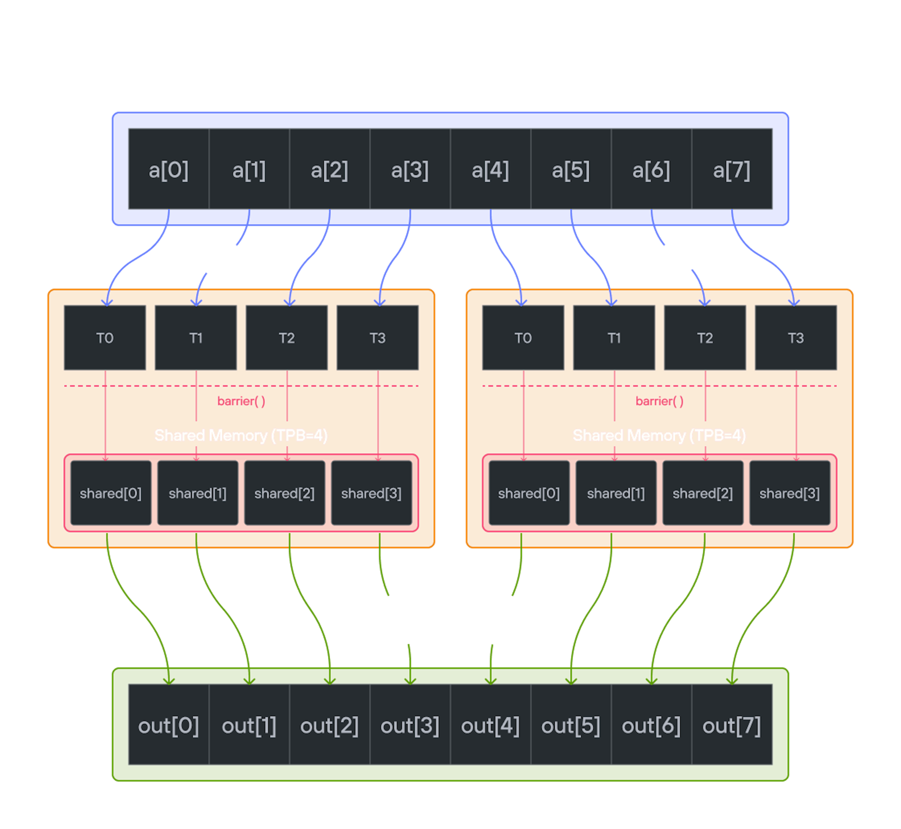

Puzzle 8: Shared Memory
Overview
Implement a kernel that adds 10 to each position of a 1D TileTensor a and
stores it in 1D TileTensor output.
Shared memory is fast, on-chip storage that is visible to all threads within
the same block. Unlike global memory (which all blocks can access but is slow),
shared memory lives on-chip, alongside the cores running the block, so an access
costs on the order of tens of cycles rather than the hundreds a global-memory
access can take. Each block gets its own private shared memory region—threads
in one block cannot see the shared memory of another block. Because threads can
read and write to the same shared memory locations, coordination via barrier()
is required to prevent one thread from reading a value before another thread has
finished writing it.
Note: You have fewer threads per block than the size of a.


Key concepts
In this puzzle, you’ll learn about:
- Using TileTensor’s shared memory features with address_space
- Thread synchronization with shared memory
- Block-local data management with TileTensor
The key insight is how TileTensor simplifies shared memory management while maintaining the performance benefits of block-local storage.
Configuration
- Array size:
SIZE = 8elements - Threads per block:
TPB = 4 - Number of blocks: 2
- Shared memory:
TPBelements per block
Warning: Each block can only have a constant amount of shared memory that threads in that block can read and write to. This needs to be a compile-time constant (a
comptimebinding), not a runtime variable. After writing to shared memory you need to call barrier to ensure that threads do not cross.
Educational Note: In this specific puzzle, the barrier() isn’t strictly
necessary since each thread only accesses its own shared memory location.
However, it’s included to teach proper shared memory synchronization patterns
for more complex scenarios where threads need to coordinate access to shared
data.
Code to complete
comptime TPB = 4
comptime SIZE = 8
comptime BLOCKS_PER_GRID = (2, 1)
comptime THREADS_PER_BLOCK = (TPB, 1)
comptime dtype = DType.float32
comptime layout = row_major[SIZE]()
comptime LayoutType = type_of(layout)
def add_10_shared_tile_tensor(
output: TileTensor[mut=True, dtype, LayoutType, MutAnyOrigin],
a: TileTensor[mut=False, dtype, LayoutType, ImmutAnyOrigin],
size_dev: Int32,
):
var size = Int(size_dev)
# Allocate shared memory. Unlike most kernel variables, which are private to
# each thread, shared memory (`AddressSpace.SHARED`) is scoped per-block.
# So, each thread in a block can use the same "scratchpad" to store data.
var shared = stack_allocation[
dtype=dtype, address_space=AddressSpace.SHARED
](row_major[TPB]())
var global_i = block_dim.x * block_idx.x + thread_idx.x
var local_i = thread_idx.x
if global_i < size:
shared[local_i] = a[global_i]
# Note: barrier is not strictly needed here since each thread only accesses
# its own shared memory location. However, it's included to teach proper
# shared memory synchronization patterns for more complex scenarios where
# threads need to coordinate access to shared data.
barrier()
# FILL ME IN (roughly 2 lines)
View full file: problems/p08/p08.mojo
Tips
- Create shared memory with TileTensor using address_space parameter
- Load data with natural indexing:
shared[local_i] = a[global_i] - Synchronize with
barrier()(educational - not strictly needed here) - Process data using shared memory indices
- Guard against out-of-bounds access
Running the code
To test your solution, run the following command in your terminal:
pixi run p08
pixi run -e amd p08
pixi run -e apple p08
uv run poe p08
Your output will look like this if the puzzle isn’t solved yet:
out: HostBuffer([0.0, 0.0, 0.0, 0.0, 0.0, 0.0, 0.0, 0.0])
expected: HostBuffer([11.0, 11.0, 11.0, 11.0, 11.0, 11.0, 11.0, 11.0])
Solution
def add_10_shared_tile_tensor(
output: TileTensor[mut=True, dtype, LayoutType, MutAnyOrigin],
a: TileTensor[mut=False, dtype, LayoutType, ImmutAnyOrigin],
size_dev: Int32,
):
var size = Int(size_dev)
# Allocate shared memory. Unlike most kernel variables, which are private to
# each thread, shared memory (`AddressSpace.SHARED`) is scoped per-block.
# So, each thread in a block can use the same "scratchpad" to store data.
var shared = stack_allocation[
dtype=dtype, address_space=AddressSpace.SHARED
](row_major[TPB]())
var global_i = block_dim.x * block_idx.x + thread_idx.x
var local_i = thread_idx.x
if global_i < size:
shared[local_i] = a[global_i]
# Note: barrier is not strictly needed here since each thread only accesses
# its own shared memory location. However, it's included to teach proper
# shared memory synchronization patterns for more complex scenarios where
# threads need to coordinate access to shared data.
barrier()
if global_i < size:
output[global_i] = shared[local_i] + 10
This solution demonstrates how TileTensor simplifies shared memory usage while maintaining performance:
-
Memory hierarchy with TileTensor
-
Global tensors:
aandoutput(slow, visible to all blocks) -
Shared tensor:
shared(fast, thread-block local) -
Example for 8 elements with 4 threads per block:
Global tensor a: [1 1 1 1 | 1 1 1 1] # Input: all ones Block (0): Block (1): shared[0..3] shared[0..3] [1 1 1 1] [1 1 1 1]
-
-
Thread coordination
-
Load phase with natural indexing:
Thread 0: shared[0] = a[0]=1 Thread 2: shared[2] = a[2]=1 Thread 1: shared[1] = a[1]=1 Thread 3: shared[3] = a[3]=1 barrier() ↓ ↓ ↓ ↓ # Wait for all loads -
Process phase: Each thread adds 10 to its shared tensor value
-
Result:
output[global_i] = shared[local_i] + 10 = 11 -
As noted above, the
barrier()isn’t strictly necessary here because each thread only writes to and reads fromshared[local_i], but it stands in for the synchronization every cooperative pattern needs
-
-
TileTensor benefits
-
Shared memory allocation:
# Clean TileTensor API with address_space var shared = stack_allocation[ dtype=dtype, address_space=AddressSpace.SHARED ](row_major[TPB]()) -
Natural indexing for both global and shared:
Block 0 output: [11 11 11 11] Block 1 output: [11 11 11 11] -
Built-in layout management and type safety
-
-
Memory access pattern
- Load: Global tensor → Shared tensor (optimized)
- Sync: Same
barrier()requirement as raw version - Process: Add 10 to shared values
- Store: Write 11s back to global tensor
This pattern shows how TileTensor maintains the performance benefits of shared memory while providing a more ergonomic API and built-in features.